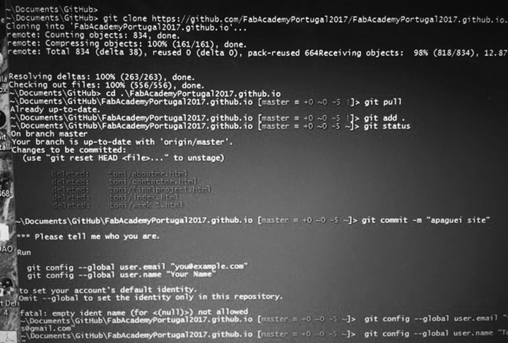
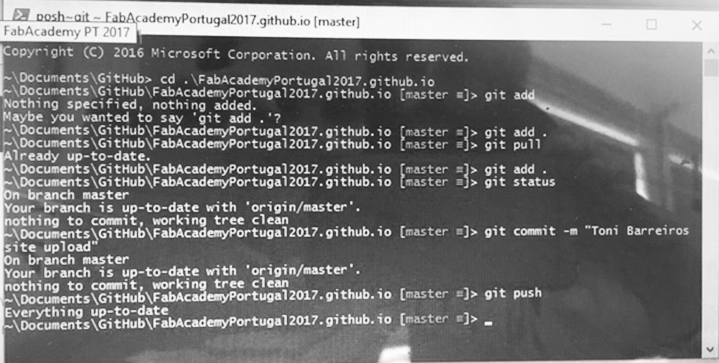
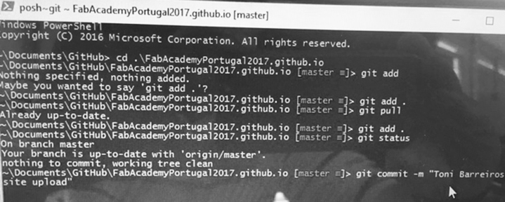
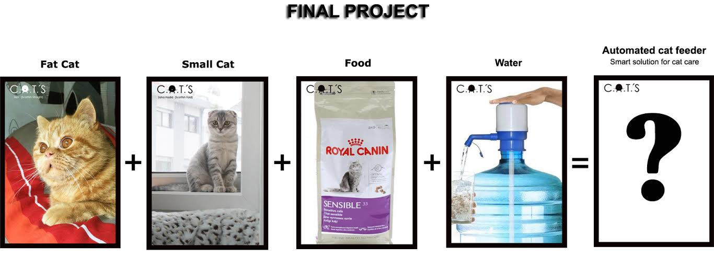
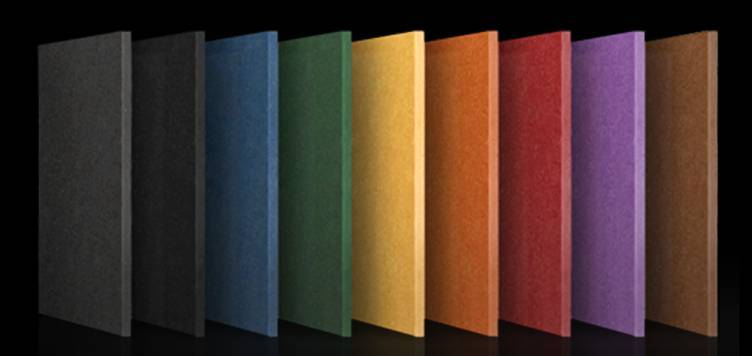
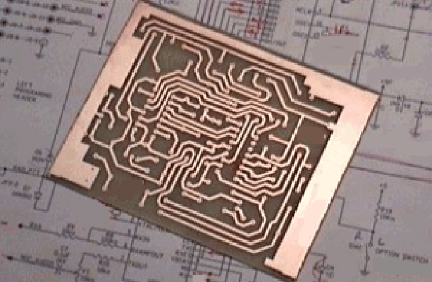
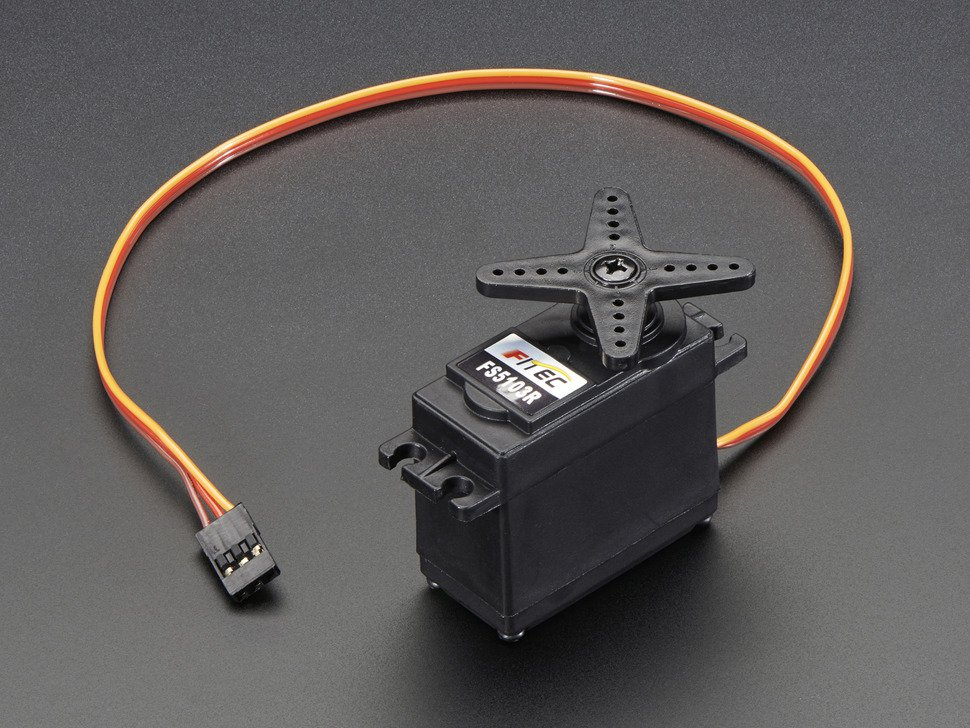
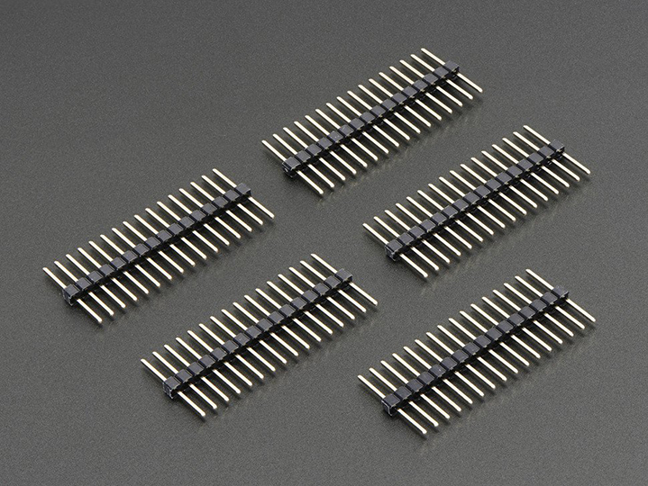
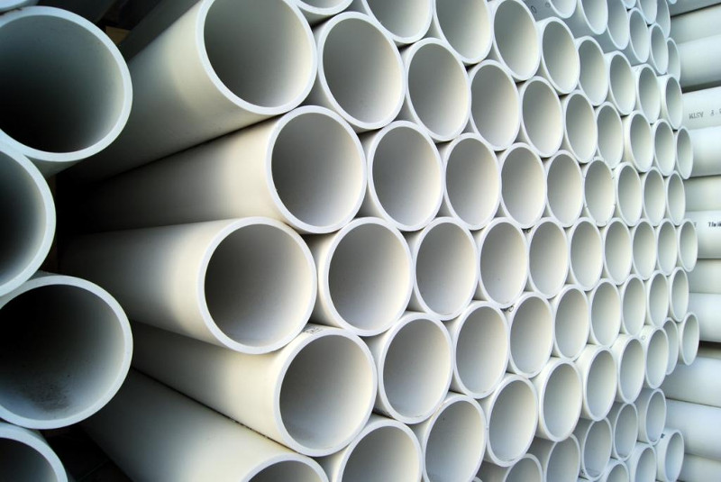
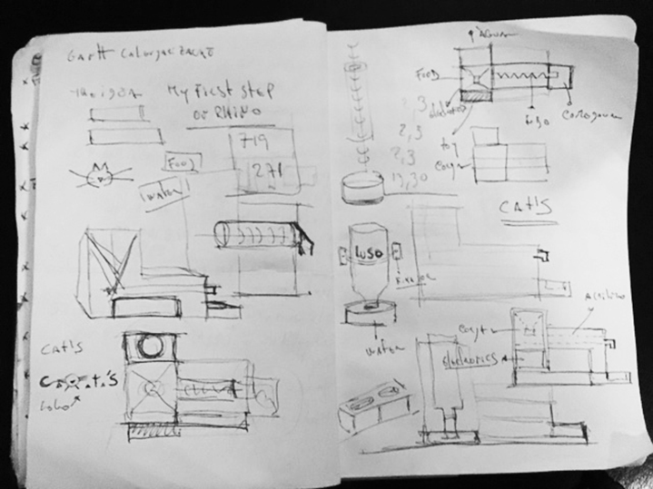

WEEK 1 (25 January 2017)
[Principles and Practices, and Project Management]
The first assignment for the FabAcademy was to build a personal site. I will upload my website files. We also need to create a class archive where we describe who we are and which are the constrains of our final project proposal. My website was created on Dreamweaver, I then used the homepage as a template (free Bootstrap themes and templates) for each additional page, to maintain continuity throughout the site. I installed the GitHub and learned the steps to publish my website, With the help of my remote instructor Luís Carvão.
First Step
The location on my drive where I have my files available is in my Documents. I started by deleting the files I had and then I made a file update.



I had the opportunity to really understand that this project involves many processes. My goal will be to describe all these processes in an easier way using images, schemes, and movies.
Plan and sketch my final project
Automated Cat Feeder
For my final project I decided to build a smart food and water dispenser for my two cats
To be able to check my cats nutrition and daily consumption rate as well i get notifications when food and water supplies are lowering.
Food dispenser enables me to feed my cats just like the wild typical ones; it has a small bowl that allows to dispense small amounts of food frequently throughout the day. Its sealed reservoir conserves kibbles for one month and keeps them fresh and strong.
Water dispenser it keeps the water running and fresh and encourages cats to drink more. The water dispenser includes a filter, which removes bad tastes and smells which are annoying for cats.
- We can activate the water fountain continuously
- We can activate or desactivate the pump of the fountain at anytime we want (Example: You want it to be turned off during the night because you don’t want to hear the sound of the water flowing)
- We can activate it only when the cat is near the Automated Cat Feeder
Future improvements include ...

Steps:
List of some parts and components that I need to make this project:
Search for examples and studie how to make my project - Homemade Automatic Dog Feeder
Drawing the cat feeder
Drawing parts of the project
Make a 3D Model of the project
Create 3D STL parts
Create a Snack Dispenser
Create a Wifi Adaptor
Mill a Board PCB
Programming the Board
Buy a continuous Rotation Servo
Pin Headers for the Servos
Buy a 10 Watt 5V USB Power supply
Create a heat shrink tube
…
Example of a Food Container

Valchromat

PCB Board

Continuous Rotation Servo

Pin Headers for the Servos

Electronics kits and Components

PVC pipe for Feeder Nozzles

...
Sketches:

ganttview